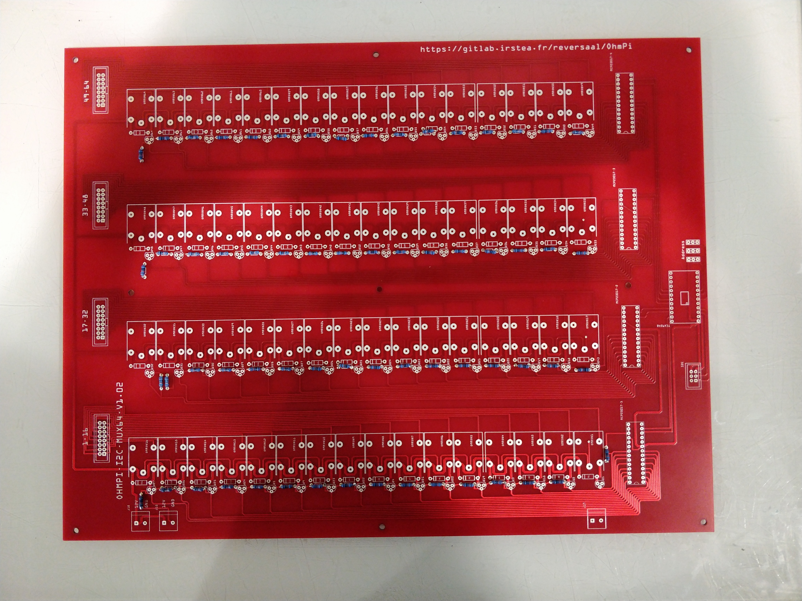
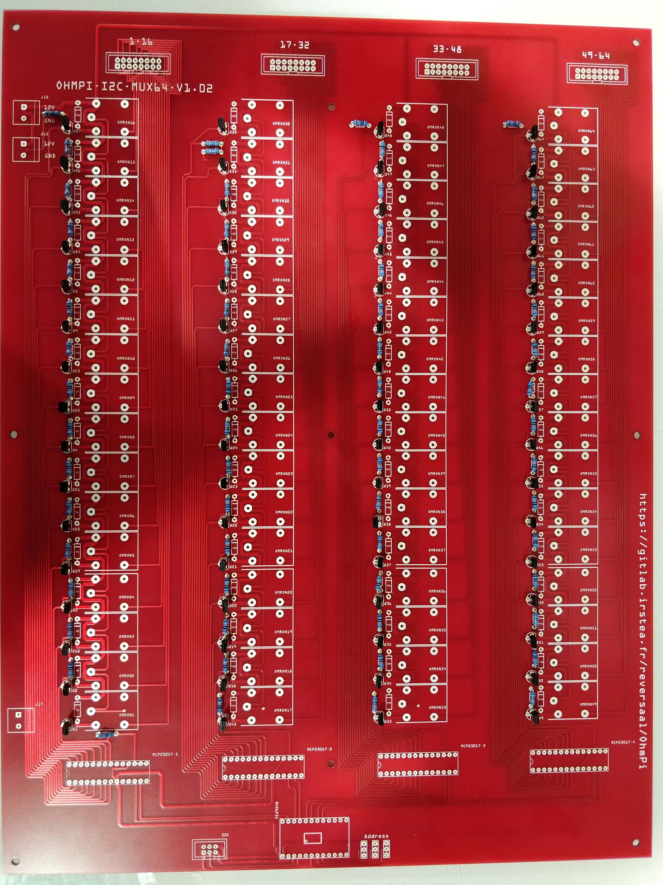
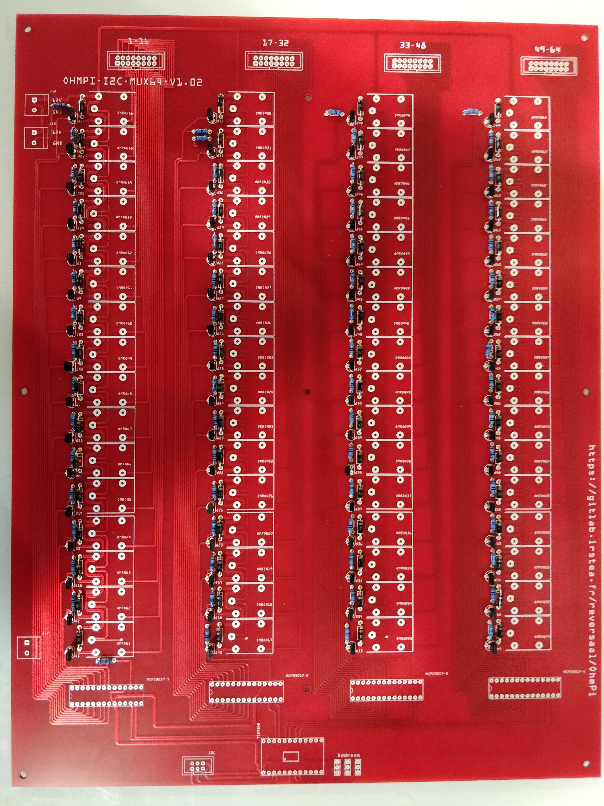
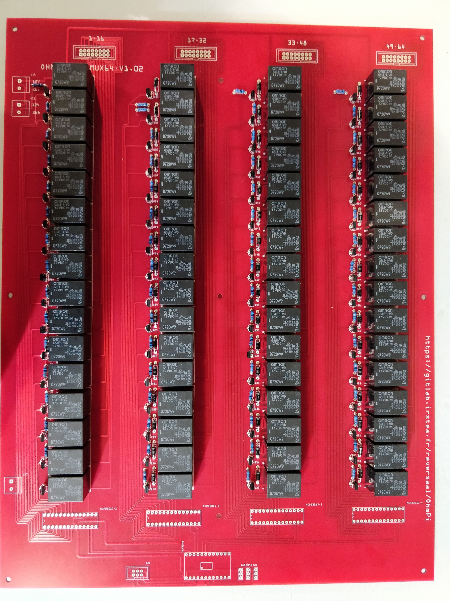
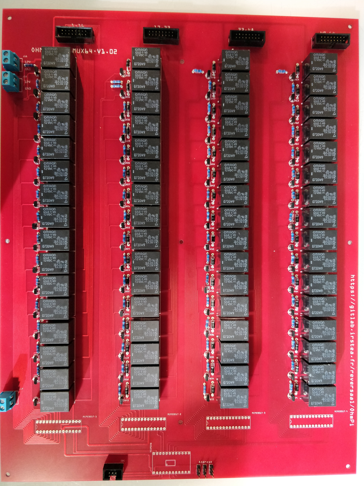
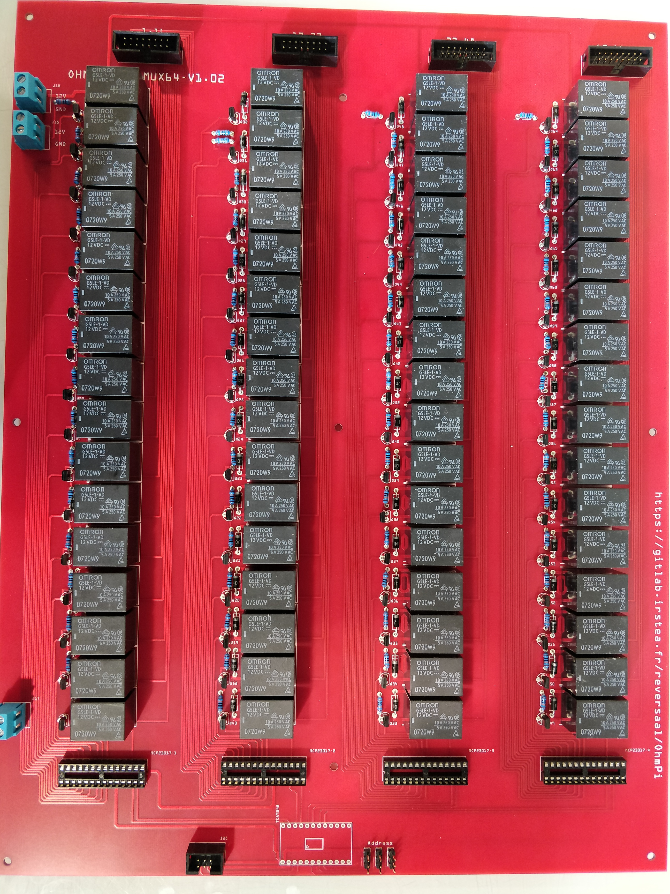
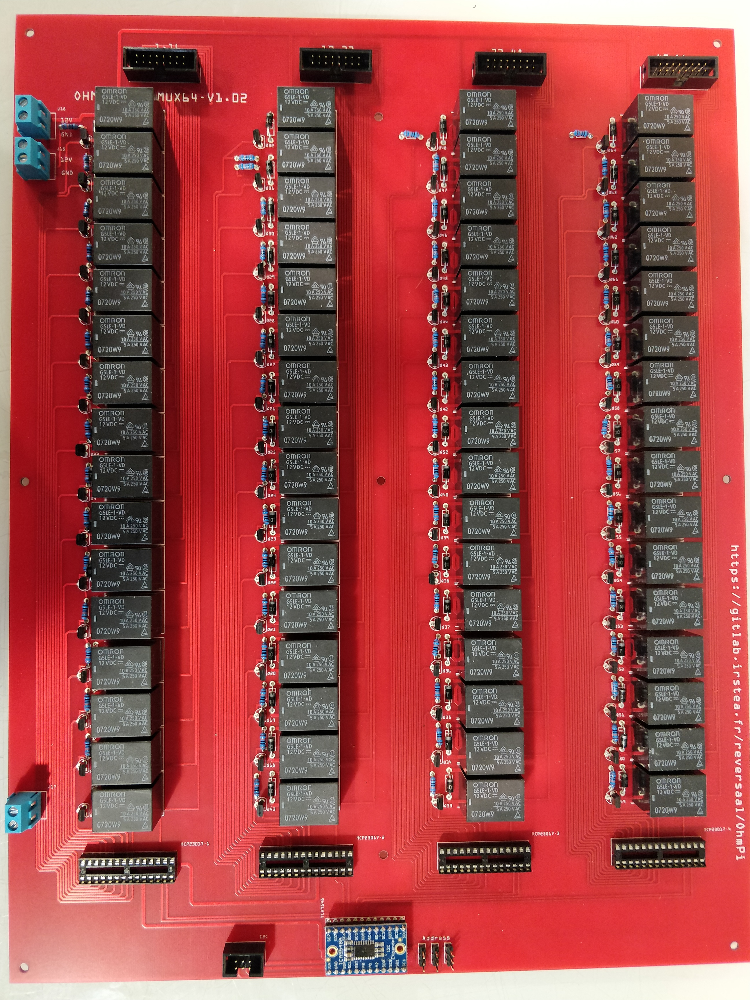
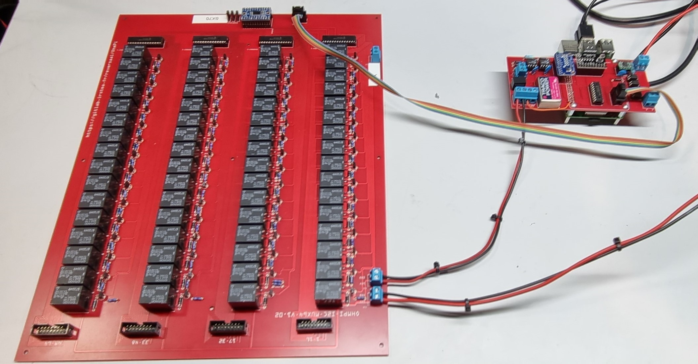

STEP n°3: MUX board¶
The multiplexing of the channels is a mechanical multiplexing based on OMRON’s manufacturing relays (G5LE-1-VD 12 VDC). Each relay is combined with a ZVN4206A power MOFSET. The raspberry has only 30 GPIOs, which is not enough to activate all the 64 electrodes, which represent 512 GPIOs. We used gpio expender I2C (MCP23017). We have associated these components with an I2C muliplexer of type type TCA9548A from adafruit. This combination allows to go up to 512 GPIOs and up to 128 electrodes. Each card has its own digital address between 0X70 and 0X77. In the following presentation for an Ohmpi 64 electrodes, we will use the addresses 0X70 for channel A, 0X71 for channel B, 0X72 for channel M and 0X73 for channel N. 0X73 for the N channel. 4 MUX board will be needed to multiplex an Ohmpi 64 electrodes.
PART A Assembly of MUX board¶
Required components¶

Component |
Number |
Cost per unit € |
Total cost € |
Manufacturer |
Manufacturer s reference |
Web reference |
|---|---|---|---|---|---|---|
Printed circuit board |
4 |
140 |
560 |
Asler |
||
Pin strip no ejector 16 pins |
16 |
0.62 |
9.92 |
BLK electronic |
10120550 |
|
diode-1n4007 |
256 |
0.091 |
23.296 |
Diodes Incorporated |
1N4007-T |
|
Pin strip no ejector 6 pins |
4 |
0.39 |
1.56 |
BLK electronic |
10120550 |
|
Dual screw terminal (5.08-mm pitch) |
12 |
0.648 |
7.776 |
CUI Devices |
TB009-508-02BE |
https://www.mouser.fr/ProductDetail/CUI-Devices/TB009-508-02BE?qs=vLWxofP3U2wCFk5uCkWTkA%3D%3D |
Generic male header - 3 pins |
12 |
0.205 |
2.46 |
TE Connectivity |
4-103321-5 |
https://www.mouser.fr/ProductDetail/TE-Connectivity/4-103321-5?qs=5TwgZeq9E7HSYLqaljJYrw%3D%3D |
MCP23017 I2C I/O Expander |
16 |
2.5 |
40 |
Adafruit |
732 |
https://www.mouser.fr/ProductDetail/Adafruit/732?qs=sGAEpiMZZMsKEdP9slC0Yfx16nYdMpXJueeOGoLBlDI%3D |
Omron G5LE-1-VD 12 VDC PCB relay 12 V DC 8 A 1 |
256 |
1.27 |
325.12 |
Omron |
G5LE-1-VD 12 VDC |
https://www.conrad.com/p/omron-g5le-1-vd-12-vdc-pcb-relay-12-v-dc-8-a-1-change-over-1-pcs-503811 |
ZVN4206A MOSFET-NCHANNEL |
256 |
0.471 |
120.576 |
Diodes Incorporated |
ZVN4206A |
|
100k? Resistor |
256 |
0.061 |
15.616 |
Vishay / Beyschlag |
MBA02040C1003FRP00 |
|
Adafruit TCA9548A |
4 |
5.89 |
23.56 |
Adafruit |
2717 |
|
BKL Electronic 10120558 Pin strip no ejector Contact spacing: 2.54 mm Total number of pins: 16 No. of rows: 2 1 pc(s) |
16 |
0.51 |
8.16 |
BLK electronic |
10120558 |
|
BKL Electronic 10120862 Pin connector + strain relief Contact spacing: 2.54 mm Total number of pins: 6 No. of rows: 2 1 |
16 |
0.84 |
13.44 |
BLK electronic |
10120862 |
|
BKL Electronic 10120158/10 Ribbon cable Contact spacing: 1.27 mm 16 x 0.08 mm Multi-coloured 10 m |
1 |
27 |
27 |
BLK electronic |
10120158/10 |
|
spacer 5.5 HEX 25 mm M3 male/female |
31 |
2.79 |
86.49 |
Keystone Electronics |
24300 |
https://www.mouser.fr/ProductDetail/Keystone-Electronics/24300?qs=UWqYQ%2F2cZWu0ejpOzmZC2A%3D%3D |
Screw |
9 |
0.305 |
2.745 |
APM HEXSEAL |
RM3X8MM-2701 |
https://www.mouser.fr/ProductDetail/APM-HEXSEAL/RM3X8MM-2701?qs=JJSE%2F12mKnS3VxSDrYXUHw%3D%3D |
spacer 5.5 HEX 25 mm M3 female/female |
9 |
0.846 |
7.614 |
Keystone Electronics |
25515 |
https://www.mouser.fr/ProductDetail/Keystone-Electronics/25515?qs=UWqYQ%2F2cZWuxuhUmfr%252BZuQ%3D%3D |
DIP dual-in-line 2*14 |
16 |
1.55 |
24.8 |
Preci-dip |
110-87-328-41-001101 |
https://www.mouser.fr/ProductDetail/Preci-dip/110-87-328-41-001101?qs=uQD7XCvsSCNr3HWD6fta8g%3D%3D |
1 |

|
Mux board pcb |
2 |
 |
Installation of the 100 Kohm resistors |
3 |
 |
Installation of the mosfet ZVN4206A |
4 |
 |
Installation of the diode-1n4007 |
5 |
 |
Installation of the relay |
6 |

|
Instalation of the terminal screw |
7 |

|
Installation of generic male header |
8 |
 |
Installation of Pin strip (6 pins) and pin strip (16 pins) |
9 |
 |
Installation of DIP Dual In Line Socket 2*14 |
10 |
 |
Installation of Adafruit TCA9548A |
10 |

|
Installation of MCP23017 |
Note
This step must be duplicated 4 times for every Mux card.
PART B MUX board address¶
To build an ohmpi it is necessary to have 4 MUX boards, with 4 different addresses. It is therefore necessary to identify each board, by assigning an address, which will be allocated in the Ohmpi code. We present here the addresses selected by default.
For the A electrode board, we suggest addressing it with address 0x70:
1 |

|
Mount the jumpers and note the value of the address and the electrode name on the mux board (A). |
|

|
|
Zoom on the jumper |
For the B electrode board, we suggest addressing it with address 0x71:
2 |

|
Mount the jumpers and note the value of the address and the electrode name on the mux board (B). |
|

|
|
Zoom on the jumper |
For the N electrode board, we suggest addressing it with address 0x72:
3 |

|
Mount the jumpers and note the value of the address and the electrode name on the mux board (B). |
|

|
|
Zoom on the jumper |
For the M electrode board, we suggest addressing it with address 0x73:
4 |

|
Mount the jumpers and note the value of the address and the electrode name on the mux board (B). |
|

|
|
Zoom on the jumper |
PART C Validation of MUX board¶
The first step is to test the Mux boards before assembling them definitively. To test the Mux boards, it will be necessary first to make a simplified assembly of the Mux board and the measurement board.
The first thing to do is to prepare a 50 cm long flat wire with two 6-poles connectors.
1

Build a cable with 6 contacts with 6 pins connector.
2

Prepare the measurement board and the first mux board by example the card with address 0x71.
3

Connect the cables for the 12V power supply to the MUX board without powering the board.
4

Connect the 12V power supply screw terminal of the mux board to the 12V screw terminal power supply of the measurement board.
5
 Connect the 6-contact cable
Start your 12V power supply, the raspberry must start.
Run the terminal and write:
pythoni2cdetect -y 1
Three addresses should appear, including the address of the MUX board you have selected. This implies that your board has been detected.
Open the script called “test_mux_board.py”.
Run the script